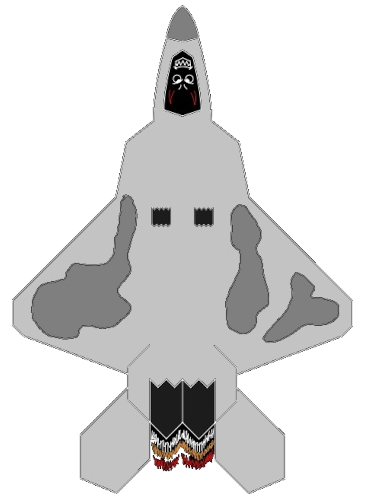

These are the custom ship sprites created by the teams for XFC 2025. Teams, please place your votes by emailing the organizers your top 3 in order (not including your own).
This sprite was submitted by Team Floppy Disk from the University of Alberta.
This sprite was submitted by Team Hit or Miss from the University of Alberta.
This sprite was submitted by Team Swedish Vikings from KTH Royal Institute of Technology.

This sprite was submitted by Team Temp Variable from the University of Cincinnati.